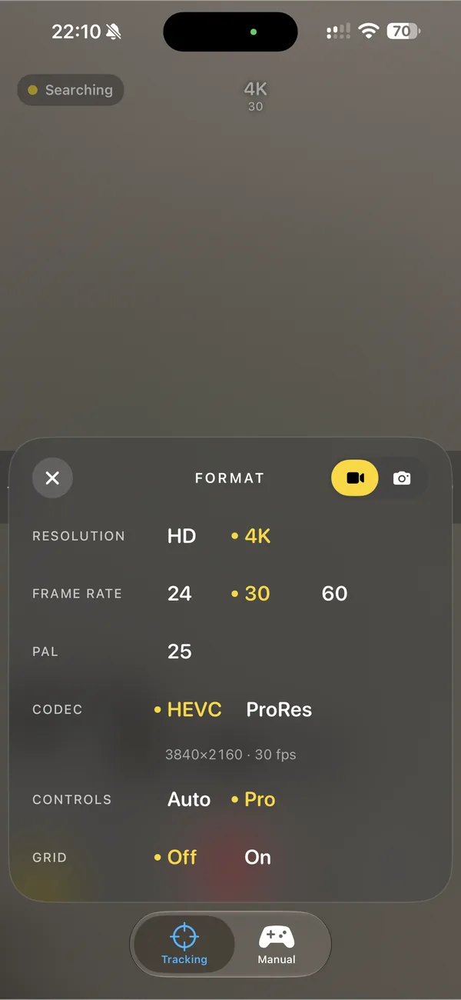

Fotocamera e formato
Modalità video e foto, risoluzione, frequenza fotogrammi, obiettivi.


Video o foto
Il selettore a sinistra del pulsante di scatto cambia modalità. La fotocamera si riconfigura, come nell’app Fotocamera di Apple.
- Modalità video: zoom continuo su tutti e tre gli obiettivi, e zoom automatico.
- Modalità foto: la piena risoluzione fotografica dell’obiettivo selezionato. L’immagine del mirino è in 4:3.
Impostare il formato
Tocca l’indicazione del formato in alto al centro. Durante una registrazione il pannello è bloccato.
Video
| Impostazione | Opzioni |
|---|---|
| Risoluzione | HD (1920 × 1080) o 4K (3840 × 2160) |
| Frequenza fotogrammi | 24, 30 o 60 fotogrammi al secondo, 25 per PAL |
| Codec | HEVC; ProRes 422 HQ con Keepsight Pro |
| Controlli | Auto Pro |
| Griglia | No Sì |
Foto
| Impostazione | Opzioni |
|---|---|
| Formato | HEIF o RAW (Apple ProRAW, con Keepsight Pro) |
| Risoluzione | Ciò che offre l’obiettivo, vedi sotto |
| Controlli | Auto Pro |
| Griglia | No Sì |
Controlli manuali
Controlli manuali: imposta tu ISO, otturatore, bilanciamento del bianco, tinta e fuoco, ognuno separatamente. Richiede Keepsight Pro.


Per aprirli, tocca l’indicazione del formato in alto e imposta Controlli su Pro. Trovi Controlli manuali anche nel pannello Fotocamera; da lì funziona anche durante la registrazione di un video.
La finestra è bassa e non scurisce l’immagine, quindi vedi subito ogni cambiamento. Una piccola «A» indica ogni valore che la fotocamera imposta ancora da sola. Appena muovi un cursore, quel valore è fisso. Auto lo restituisce alla fotocamera, Tutto auto ripristina tutto. I tuoi valori valgono per foto e video e restano finché non li cambi.
Sei agli inizi? Lascia tutto su Auto e prova prima l’esposizione. Ogni impostazione resta automatica finché non muovi il suo cursore. Auto la restituisce alla fotocamera.
Esposizione
Esposizione: rende tutta l’immagine più chiara o più scura mentre la fotocamera continua a misurare la luce. Il controllo più semplice per iniziare.
Usala quando l’immagine risulta troppo scura o troppo chiara, per esempio un soggetto contro un cielo luminoso, la neve o un palco. Più schiarisce, meno scurisce, a terzi di stop da −3 a +3. Funziona anche mentre ISO o otturatore sono fissi.
ISO
ISO: la sensibilità del sensore. Un valore più alto schiarisce l’immagine ma aumenta la grana. Tienilo il più basso possibile per la luce che hai.
Scegli un ISO basso alla luce del giorno per l’immagine più pulita e alzalo in interni o al crepuscolo. Se fissi solo l’ISO, Keepsight regola da solo il tempo di posa perché la luminosità resti corretta.
Pulsante di scatto
Otturatore: per quanto tempo viene esposta ogni immagine. Tempi brevi come 1/1000 congelano i movimenti rapidi. Tempi più lunghi fanno entrare più luce ma rendono mosso il movimento.
Usa 1/1000 o più breve per uccelli, sport e aerei, così restano nitidi. Per un video dall’aspetto naturale usa circa il doppio della frequenza dei fotogrammi, per esempio 1/60 a 30 fotogrammi al secondo. Se fissi solo l’otturatore, Keepsight regola da solo l’ISO. Nel video il tempo non può essere più lungo di un fotogramma; in modalità foto arriva a 1/4 di secondo.
Bilanciamento del bianco
Bilanciamento del bianco: adatta i colori alla luce perché il bianco appaia bianco. Tocca il simbolo di lampada, sole, nuvola o ombra, oppure imposta il valore in Kelvin.
Fissalo quando i colori cambiano durante una ripresa, per esempio quando la fotocamera passa dal sole all’ombra, o quando la luce di una lampada sembra troppo gialla. I simboli impostano 3200 K per le lampadine, 4000 K per la luce fluorescente, 5600 K per il sole, 6500 K per il cielo nuvoloso e 7500 K per l’ombra. Il cursore va da 2500 K a 10000 K.
Tinta
Tinta: sposta i colori tra verde e magenta. Di solito serve solo con luce artificiale.
Usala quando la pelle o le pareti bianche appaiono verdastre o rosate, cosa frequente sotto lampade LED o fluorescenti. Sposta il cursore finché il bianco torna neutro. Quando il bilanciamento del bianco è fisso e la tinta è su Auto, la tinta mantiene l’ultimo valore misurato, e viceversa.
Fuoco
Fuoco: imposta la distanza nitida, da vicino a sinistra a lontano a destra.
Usalo quando l’autofocus va avanti e indietro, per esempio attraverso una recinzione, una finestra o dei rami, o con un soggetto piccolo contro il cielo. Imposta la distanza una volta e resta lì. I soggetti lontani, come gli aerei, sono all’estremità destra del cursore.
Diaframma
Diaframma: l’apertura dell’obiettivo. Keepsight mostra il valore ma non può ancora cambiarlo, nemmeno su iPhone 18 Pro.
Griglia
Griglia: due linee per lato ti aiutano a tenere dritto l’orizzonte e a posizionare il soggetto. Non vengono salvate in foto e video.
Attivala nel pannello del formato sotto Griglia. È disponibile per tutti, anche senza Pro. Metti il soggetto su uno dei quattro punti di incrocio per un’immagine equilibrata e usa le linee per tenere dritti orizzonte ed edifici.
Nitidezza: AF e messa a fuoco che segue
AF: il tasto AF alla fine della barra degli obiettivi mette a fuoco una volta sul soggetto seguito, o al centro dell’immagine se non segui nulla. Gratuito per tutti.
La messa a fuoco segue il soggetto: finché Keepsight segue un soggetto, la nitidezza resta su di esso, anche quando va verso il bordo. Attivala nelle impostazioni in Controllo dell’immagine → La messa a fuoco segue il soggetto. Si mette in pausa appena regoli la messa a fuoco a mano. Richiede Keepsight Pro.
Strumenti di controllo
Gli strumenti di controllo mostrano com’è davvero l’immagine, come nelle videocamere professionali. Appaiono solo sullo schermo e non finiscono mai in foto o video. Attivali nelle impostazioni in Controllo dell’immagine. Richiede Keepsight Pro.
| Strumento | Cosa mostra |
|---|---|
| Zebra | Strisce bianche diagonali sulle zone troppo chiare che perdono dettaglio. Imposta la soglia con Soglia zebra, da 75 a 100 %. Se vedi strisce su un volto o sul cielo, riduci l’esposizione. |
| Focus peaking | Colora i bordi nitidi. Utile con la messa a fuoco manuale: gira la messa a fuoco finché il soggetto si illumina. Scegli il colore che risalta di più: verde, rosso, blu o giallo. |
| Istogramma | Come si distribuisce la luminosità, dal buio a sinistra al chiaro a destra. Una montagna attaccata al bordo destro indica sovraesposizione, al bordo sinistro sottoesposizione. |
| Livelli audio | Il livello sonoro di ogni canale del microfono da −45 a +3 dB: verde, giallo da −12 dB, rosso da −3 dB. Visibile finché il microfono è attivo, cioè durante la registrazione o con il controllo vocale. |
| Guida formato | Scurisce tutto ciò che è fuori dal formato scelto: 9:16 per Reels e Shorts, 4:5 e 1:1 per i post, 4:3, 16:9 e i formati cinema 1,85:1 e 2,39:1. Il video mantiene il formato completo, così puoi ritagliarlo dopo. |
Doppia ripresa: video con immagine selfie
Doppia ripresa: la fotocamera posteriore riprende e segue il soggetto, quella anteriore riprende te nello stesso momento. Il tuo selfie appare come piccola immagine in basso a destra nel video.
Attivala nelle impostazioni in Doppia ripresa. Con Salva anche il video selfie a parte il selfie viene salvato anche come video a parte, da montare tu più tardi. Con la doppia ripresa attiva, il mirino mostra il tuo selfie in alto a destra.
- Entrambe le fotocamere registrano al massimo in 1080p a 30 fotogrammi al secondo, senza 4K né ProRes. La posteriore usa l’obiettivo principale, lo zoom è digitale.
- Tracking, gesti, comandi vocali e gimbal continuano a funzionare.
- Solo in modalità video. Passare alla modalità foto o alla fotocamera anteriore termina la doppia ripresa.
- Se l’iPhone si scalda, l’immagine selfie si spegne da sola.
- Richiede Keepsight Pro e un iPhone in grado di riprendere con entrambe le fotocamere insieme. Se il tuo non può, Keepsight te lo dice.
Ridurre il calore durante la registrazione
Le registrazioni lunghe al sole scaldano ogni iPhone. Con Riduci il calore durante la registrazione Keepsight risparmia energia durante la registrazione e ripristina tutto quando ti fermi. È attivo di serie e gratuito per tutti.
- Lo schermo si oscura dopo 10 secondi. Toccalo per riattivarlo. La registrazione continua.
- Finché il soggetto sta fermo, il rilevamento calcola meno spesso. Appena si muove, torna a piena velocità.
- I gesti vengono controllati meno spesso, il controllo vocale resta attivo.
- Gli strumenti di controllo e l’immagine dal vivo sull’Apple Watch si aggiornano meno spesso.
Se l’iPhone si scalda comunque, Keepsight fa un passo in più: prima si spegne l’immagine selfie, poi si mette in pausa il video con overlay, poi il rilevamento rallenta. Se l’iPhone è troppo caldo, il tracking si ferma e la registrazione viene salvata.
Fotocamera anteriore e selfie
Il pulsante con le due frecce accanto alla miniatura passa alla fotocamera anteriore. Ti vedi specchiato, come nell’app Fotocamera di Apple. Le riprese vengono salvate non specchiate, come ti vedono gli altri; per le foto puoi cambiarlo.
- Video e foto: video fino a 4K, foto alla piena risoluzione della fotocamera anteriore.
- Soggetto: al cambio, Keepsight passa a Volto e punta ai tuoi occhi. Con un gimbal ti segue anche davanti alla fotocamera anteriore.
- Barra selfie in modalità foto: sopra il pulsante di scatto scegli Singolo, Sorriso o Sguardo. Sorriso e Sguardo sono attivi appena li tocchi: Keepsight scatta da solo quando tutti sorridono o guardano in camera. Entrambi fanno parte di Keepsight Pro.
- Conto alla rovescia: con la fotocamera anteriore lampeggia lo schermo al posto della luce.
- Non disponibile: scelta dell’obiettivo e zoom automatico, perché la fotocamera anteriore ha un solo obiettivo.
Ritratto
Ritratto, nella barra selfie o nel pannello Fotocamera, fa parte di Keepsight Pro.
- Foto: Keepsight salva l’immagine con i dati di profondità della fotocamera anteriore. Poi regoli la sfocatura dello sfondo nell’app Foto. Le foto ritratto sono in HEIF a 12 MP; ProRAW qui non è possibile.
- Video: Keepsight sceglie un formato che supporta l’effetto Ritratto di Apple, di solito 1080p a 30 fotogrammi. L’effetto si attiva nel Centro di Controllo sotto Effetti video; Keepsight lo apre per te. A seconda dell’iPhone vi trovi anche Luce set fotografico e Inquadratura automatica.
Selfie speculari, nel pannello Fotocamera, salva i selfie così come ti vedi nel mirino.
Durante una registrazione video non è possibile cambiare fotocamera.
Obiettivi e megapixel
| Obiettivo | Risoluzione foto |
|---|---|
| .5× ultra-grandangolo | 12 MP; fino a 48 MP da iPhone 16 Pro |
| 1× fotocamera principale | 12, 24 o 48 MP; in RAW 12 o 48 MP |
| Teleobiettivo | 12 MP; fino a 48 MP da iPhone 17 Pro |
Sono le specifiche di Apple per i modelli Pro a partire da iPhone 15 Pro. Finora Keepsight è stato provato solo su iPhone 15 Pro Max. Altri modelli offrono meno megapixel con alcuni obiettivi. Il pannello del formato mostra sempre solo ciò che l’obiettivo attuale del tuo iPhone offre davvero.
Con lo scatto a voce, Keepsight passa da solo alla modalità foto o video; i gesti agiscono nella modalità impostata. Solo una foto scattata durante una registrazione video resta a circa 10 MP.